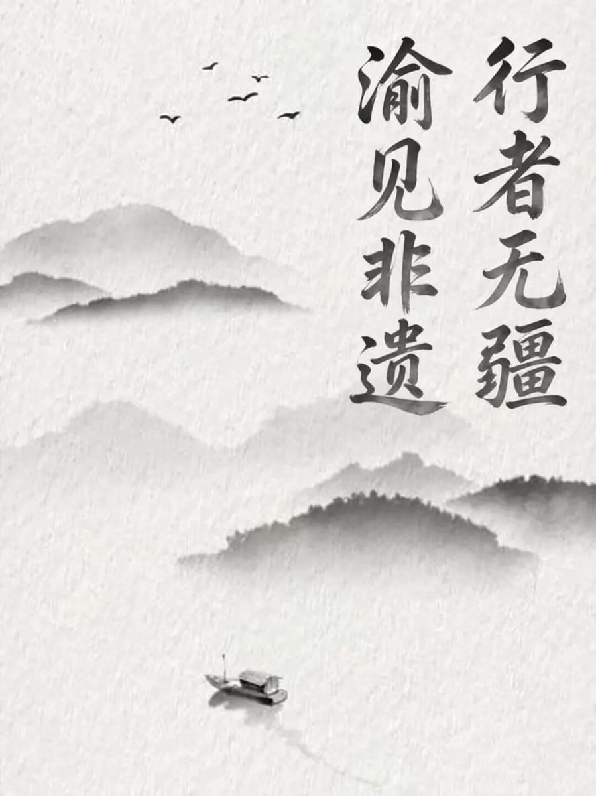
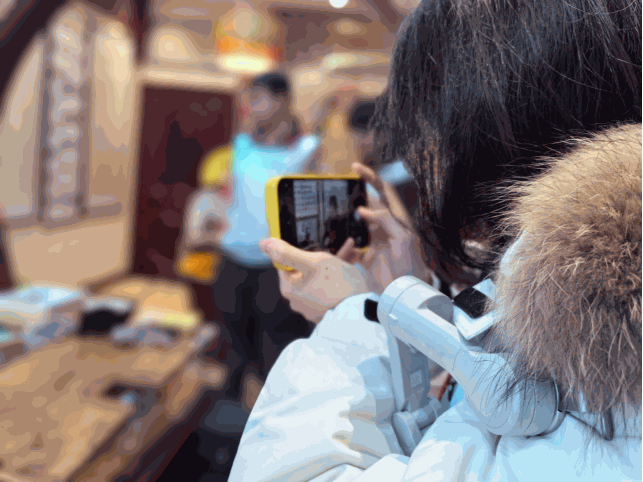
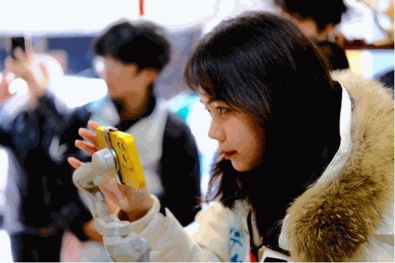
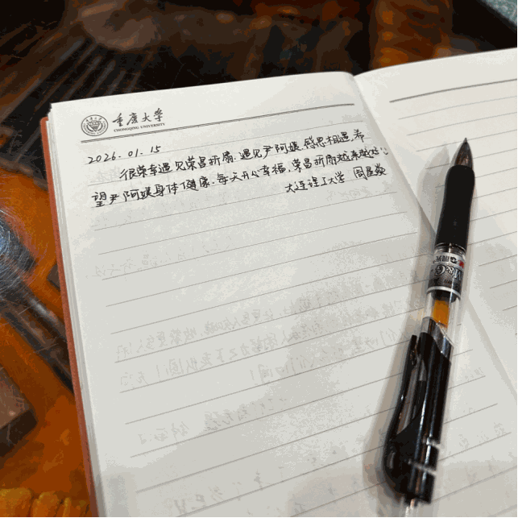

【行者无疆·渝见非遗】个人实践感悟——周星焱

当记录成为另一种抵达
作为技术组与文字组的一员，我的旅程始终透过一方小小的手机屏幕与不断滚动的文档展开。五日的行程，我一手追逐光影，一手打捞文字，在步履不停的采集中，常常担心这份“忙碌”会让我与真正的体验隔了一层。然而，当旅程落幕，所有喧嚣沉淀，最先浮上心头的，并非宏大的结论，而是那些屏幕与文档无法完全承载的、细腻的知觉与心跳。


而在非遗体验中心，当视觉因密集的信息而疲惫时，是鼻尖一缕淡淡的精油花香拯救了我。它来自某种传统的香方，清甜又幽远，瞬间将我从严密的逻辑中抽离，带入一种安宁的感性之中。我忽然觉得，传承或许就像这香气，看不见摸不着，却能在某一刻悄然浸润心灵，完成一种超越语言的传递。
我记得，在重庆母城非遗馆，最吸引我的不是宏大的叙事，而是橱窗里那些栩栩如生的传统美食模型。椒香仿佛能穿透玻璃，一碗小面的红油光泽逼真得让我恍神。那一刻，非遗之于我，不再是抽象的概念，它变成了巴渝清晨街巷里具体可感的烟火气，是舌尖上的记忆，是生活本身温暖的肌理。
川剧博物馆里，华美的戏服与盔头在射灯下流光溢彩。我的镜头对准那些繁复的刺绣与璀璨的点翠，试图框住它们的夺目。但当我放下手机，静静凝视，才真正看见针线里密不透风的岁月与信仰的重量。道具不言，却仿佛仍回荡着舞台上的金戈铁马与儿女情长。最锋利的技艺，原来是为了演绎最柔软的人情。
真正的震颤，发生在荣昌折扇厂。尹阿姨讲述家族史时，语气平实如叙家常。直到她提及自己已故的母亲，那位将毕生献给这门手艺的母亲。她的声音突然有了细微的裂痕，一个短暂的停顿，一次不易察觉的哽咽，随即被淡然的笑掩饰过去。我的镜头记录下了这个瞬间，但我感到，我记录下的是一种远比技艺更珍贵的东西——一种情感的接续。那不止是手艺的传承，更是女儿对母亲的无尽思念，是两代人对同一份使命沉默的托付。在那一刻，我手中的笔与相机，第一次感到如此沉重，又如此荣幸。

最意外的馈赠，来自荣昌问陶那日清晨。在集体活动前，我随意踏入街边一家不起眼的陶艺小店。店员小鹏是个笑容腼腆的年轻人。他讲起工厂陶与手工陶的区别，讲起学陶的趣事，讲起对泥巴的感受，眼里有光。我抚摸着他口中那些得意的作品，细腻的质感直抵掌心。那一刻我强烈地感到：非遗的故事，不只在博物馆的展签上，更在这些活生生的、普普通通的人身上。他们是小鹏，是尹阿姨，是无数有名或无名的坚守者。历史的宏大乐章，正是由这些微小而坚定的心跳谱就。
于是，我恍然理解了自己这份“忙碌”的意义。我的拍摄，不是为了制造疏离的景观；我的书写，也不是冰冷的转录。我是在用我的方式，努力成为一个忠实的“接续者”——接续那道倏忽即逝的泪光，接续那缕萦绕不散的暗香，接续那些关于陶器的可爱哲学，接续那些平凡匠人身上不平凡的光辉。
非遗的传承，在博物馆的展柜里，在学术的论文里，更在每一次真诚的注视、每一次动容的聆听、每一次用心的传递之中。很庆幸，我能以记录者的身份，成为这场伟大接续中的一道微小涟漪。光影会褪色，文字会旧去，但那些被心灵郑重收纳的瞬间，将永远温热，告诉我何为永恒。
行者无疆
来源 | 行者无疆实践团
文字 | 周星焱
图片 | 行者无疆实践团
编辑 | 尹竞翎
审核 | 刘辰锡
责编 | 邹靓靓 周 亮